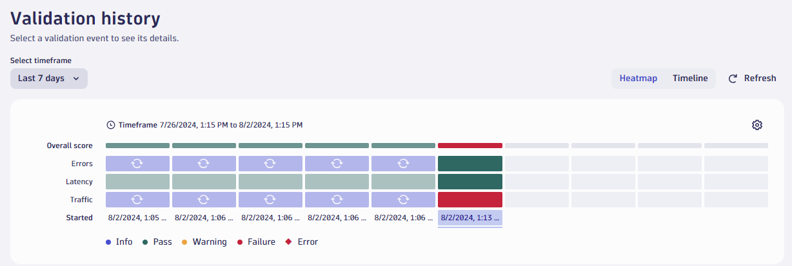
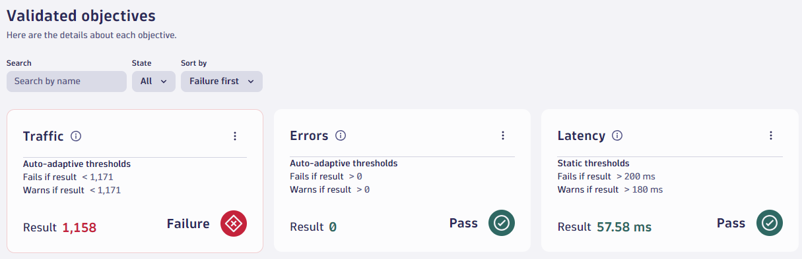
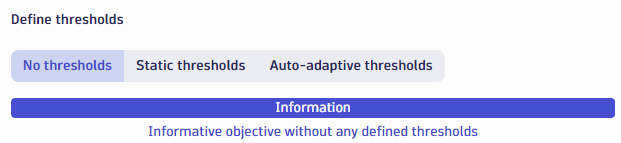

7. Run a Production SRG
Preparation Complete
The preparation phase is now complete. Everything before now is a one-off task.
In day-to-day operations, you would begin from here.
Run an Evaluation#
Now that the Site Reliability Guardian is trained, run another evaluation by triggering a load test.
Tip
Remember, the workflow is currently configured to listen for test finished events
but you could easily create additional workflows with different triggers such as on-demand on time-based CRON triggers.
This provides an ability to continuously test your service (eg. in production).
Run another load test to trigger a sixth evaluation.
kubectl apply -f .devcontainer/k6/k6.yaml
Again, wait for all jobs to complete. This run will take longer. Approximately 2mins.
kubectl -n default wait --for=condition=Complete --all --timeout 120s jobs
When the above command returns, you should see:
NAME STATUS COMPLETIONS DURATION AGE
k6-training-run1 Complete 1/1 102s 9m41s
k6-training-run2 Complete 1/1 100s 9m33s
k6-training-run3 Complete 1/1 101s 9m23s
k6-training-run4 Complete 1/1 93s 9m17s
k6-training-run5 Complete 1/1 91s 9m11s
run-k6 Complete 1/1 79s 81s
When this evaluation is completed, click the Refresh button in the Validation history panel of the site reliability guardian app (when viewing an individual guardian) and the heatmap should look like the image below
Your results may vary
Your results may vary.
In this example below, the Traffic objective failed because the auto-adaptive thresholds detected that a traffic level below 1171 requests is too low and the actual traffic level was 1158.
Because one objective failed, the guardian failed.
5 training runs and 1 "real" run:


Information Only Objectives
It is possible to add objectives that are "informational only" and do not contribute to the pass / fail decisions.
This is useful for new services where you are trying to "get a feel for" the real-world data values of your metrics.
To set an objective as "information only":
* Select the objective to open the side panel
* Scroll down to Define thresholds
* Select the No thresholds option
